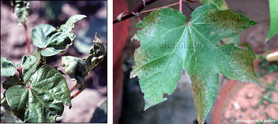
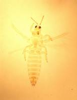

| Home |
| COTTON |
| 1. Leafhopper |
| 2. Cotton Aphid |
| 3. Thrips |
| 4. Whitefly |
| 5. Mealy Bug |
| 6. Red Cotton Bug |
| 7. Dusky Cotton Bug |
| 8. Tobacco Cutworm |
| 9. Leaf Roller |
| 10. Semiloopers |
| 11. Stem Weevil |
| 12. Shoot Weevil |
| 13. Surface Weevil |
| 14. Black Scale |
| 15. White Scale |
| 16. Yellow Stem Scale |
| Questions |
| Download Notes |
PESTS OF COTTON :: Major Pests :: Thrips
3. Thrips: Thrips tabaci (Thripidae: Thysanoptera)
Damage symptoms: Both nymph and adult lacerate the tissue and suck the sap from the upper and lower surface of leaves and in cases of severe infestation they curl up and become crumbled. Silvery sheen on the lower surface can be seen in early stages of attack.
 |
||
Upward Curling |
ETL: 1 No. /leaf
Bionomics: Adults small, slender, yellowish to brown with fringed wings and drift away on disturbance. Nymph very minute, slender, yellowish and microscopic.
 |
Management
- Monitor the nymphs and adults from the 14th day after sowing.
- Spray any of the following insecticides with 500 L water/ha
|
|
|
|
|
|
|
|
|
|